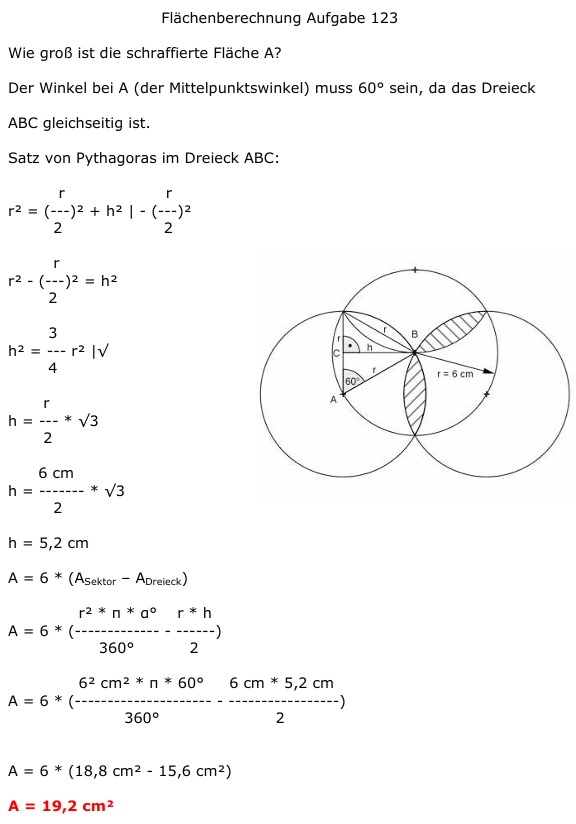

Aufgabe 123 Wie groß ist die schraffierte Fläche A?  Der Winkel bei A (der Mittelpunktswinkel) muss 60° sein, da das Dreieck ABC gleichseitig ist. Satz von Pythagoras im Dreieck ABC: r r r2 = (---)2 + h2 | - (---)2 2 2 r r2 - (---)2 = h2 2 3 h2 = --- r2 |√ 4 r h = --- * √3 2 6 cm h = ------- * √3 2 h = 5,2 cm A = 6 * (ASektor – ADreieck) r2 * π * α° r * h A = 6 * (------------- - ------) 360° 2 62 cm2 * π * 60° 6 cm * 5,2 cm A = 6 * (--------------------- - -----------------) 360° 2 A = 6 * (18,8 cm2 - 15,6 cm2) A = 19,2 cm2